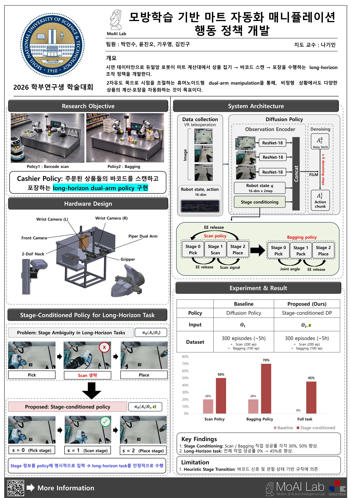

Capstone Design, SeoulTech · Hanium ICT Mentoring, Dec 2025 – present
Imitation Learning for Long-Horizon Manipulation
The goal is a checkout robot that learns from demonstrations alone: a dual-arm system picks up each ordered item, scans its barcode, and packs it into a bag. I lead a four-person team on the project, which splits the job into two policies, one for scanning and one for bagging, that together make up a long-horizon task.
The platform is a 16-degree-of-freedom system: two 7-DOF Piper arms plus a 2-DOF neck joint I designed and built myself to adjust the camera's viewpoint, with a front camera and a wrist camera on each arm. We collected 300 demonstrations (about five hours; 200 for scanning, 100 for bagging) through VR teleoperation, and I ran both training and inference across all 16 degrees of freedom together, rather than treating the neck as a fixed camera mount.
The hard part was stage ambiguity. Moments from different stages of the task look nearly the same to the cameras, so a plain Diffusion Policy that sees only the current observation loses track of where it is. In practice it would pick up an item and place it without ever scanning it.
I fixed this by conditioning the policy on the current stage: pick, scan, and place for the scan policy; pick, pack, and place for the bagging policy. Images from the front and wrist cameras pass through ResNet-18 encoders and are combined with the robot state and the stage, and this observation conditions the diffusion model through FiLM to produce a 16-step action chunk.
Trained on the same 300 demonstrations, the stage-conditioned policy raised success from 20% to 50% on scanning and from 20% to 70% on bagging. On the full task the baseline never finished, while the stage-conditioned policy completed it 45% of the time.
Stage transitions are still triggered by hand-written rules: the scanner's barcode signal, gripper release, and joint angles. Learning those transitions instead of hard-coding them is the next step.
| Task | Diffusion Policy | Stage-conditioned (ours) |
|---|---|---|
| Scan | 20% | 50% |
| Bagging | 20% | 70% |
| Full task | 0% | 45% |
Poster

Poster for the 2026 Undergraduate Research Conference (in Korean). Open PDF